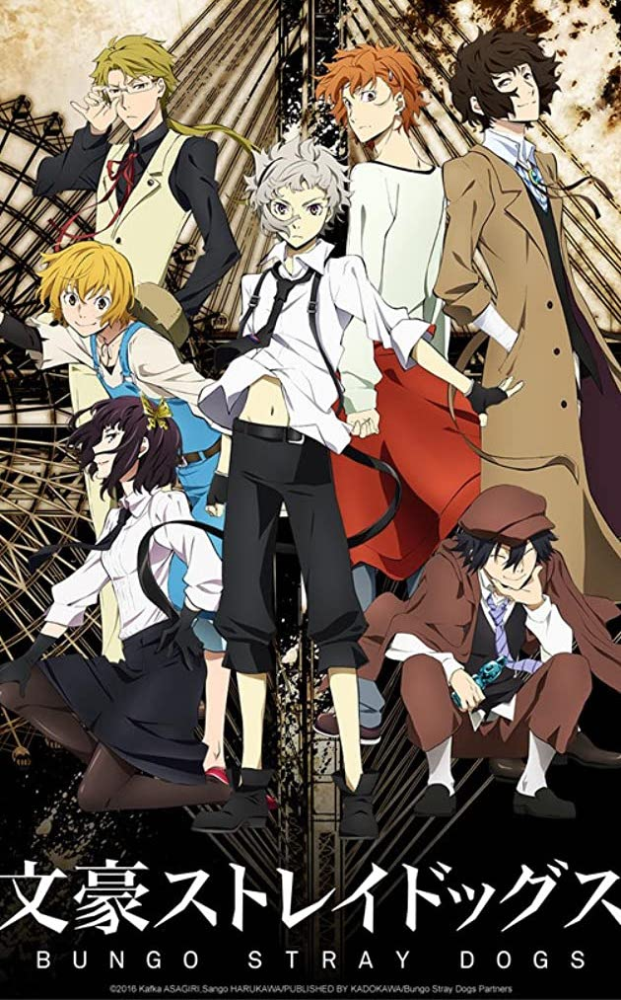
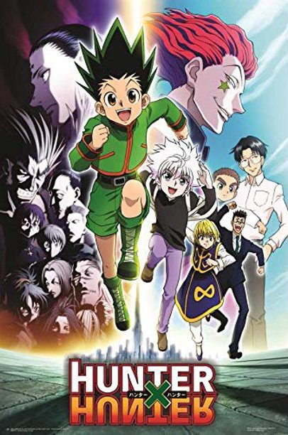

| Haikyuu! |
Hinata Shouyou, a short middle school student, gained a sudden love of volleyball after watching a national championship match on TV. Determined to become like the championship's star player, a short boy nicknamed "the small giant", Shouyou joined his school's volleyball club. Haikyuu follows his journey with his high school volleyball team.
There are 3 seasons the fourth season is currently airing
8.59/10(MyAnimeList)
|
|
| Attack On Titan |
Attack on Titan is set in a world where humanity lives inside cities surrounded by enormous Walls that protect them from Titans; gigantic humanoid creatures who devour humans seemingly without reason. The story centers around Eren Jaeger, his adoptive sister Mikasa Ackermann, and their childhood friend Armin Arlelt, whose lives are changed forever after the appearance of a Colossal Titan which brings about the destruction of their home town and the death of Eren's mother. Vowing revenge and to reclaim the world from the Titans, Eren, Mikasa, and Armin join the Scout Regiment, an elite group of soldiers who fight Titans outside the Walls.
There are 3 seasons the fourth season will release in October 2020
8.44/10(MyAnimeList)
|
|
| My Hero Academia |
In a world populated with superhumans, the superhero-loving Izuku Midoriya is without power. However, after the Quirkless dreamer Izuku inherits the powers of the world's best superhero, All Might, his hopes of becoming the top hero are now possible. Once enrolled in the high school for heroes, U.A., Izuku soon discovers being a hero is much more complicated than it appears.
There are 4 seasons the fifth season will release in sometime in 2020
8.25/10(MyAnimeList)
|
 |
| Bungou Stray Dogs |
Nakajima Atsushi was kicked out of his orphanage, and now he has no place to go and no food. While he is standing by a river, on the brink of starvation, he rescues a man who whimsically attempting suicide. That man is Dazai Osamu, and he and his partner Kunikida are members of a very special detective agency. They have supernatural powers and deal with cases that are too dangerous for the police or the military. They're tracking down a tiger that has appeared in the area recently, around the time Atsushi came to the area. The tiger seems to have a connection to Atsushi, and by the time the case is solved, it is clear that Atsushi's future will involve much more of Dazai and the rest of the detectives!
There are 3 seasons
7.79/10(MyAnimeList)
 |
 |
| Hunter x Hunter (2011) |
Gon Freecss is a young boy living on Whale Island. He learns from "Hunter" Kite, that his father, who he was told was dead, is still alive somewhere as a top "Hunter," risking his life to seek unknown items, such as hidden treasures, curiosa, exotic living creatures, etc. Gon decides to become a professional Hunter and leaves the island. To become a Hunter, he must pass the Hunter Examination, where he meets and befriends three other applicants: Kurapika, Leorio and Killua. Can Gon pass this formidable hurdle, the Hunter Examination, to become "the Best Hunter in the World" and eventually meet his father?
There are 3 seasons
9.12/10(MyAnimeList)
|
 |